The magnetron is a high-power vacuum tube that works as a self-excited microwave oscillator. Crossed electric and magnetic fields produce the high-power output required in radar equipment. This chapter covers the physical construction of the magnetron, the four phases of its operation, the crossed-field amplifier, and the extended-interaction klystron and oscillator.
The magnetron is a high-power vacuum tube that works as a self-excited microwave oscillator. Crossed electron and magnetic fields are used in the magnetron to produce the high-power output required in radar equipment. These multicavity devices may be used in radar transmitters as either pulsed or CW oscillators at frequencies ranging from approximately 600 to 95,000 megahertz. The relatively simple construction has the disadvantage that the magnetron usually can work only on a constructively fixed frequency.
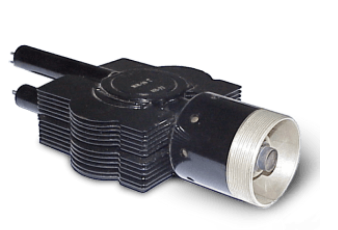
The magnetron is classed as a diode because it has no grid. The anode of a magnetron is fabricated into a cylindrical solid copper block. The cathode and filament are at the center of the tube and are supported by the filament leads. The filament leads are large and rigid enough to keep the cathode and filament structure fixed in position. The cathode is indirectly heated and is constructed of a high-emission material. The 8 to 20 cylindrical holes around its circumference are resonant cavities. A narrow slot runs from each cavity into the central portion of the tube, dividing the inner structure into as many segments as there are cavities.
Each cavity works as a parallel resonant circuit. The rear wall of the anode block structure may be considered the inductive portion (a coil with a single turn). The vane-tip region may be considered the capacitor portion of the equivalent parallel resonant circuit. The resonant frequency of a microwave cavity is thereby determined by the physical dimensions of the resonator. If a single resonant cavity oscillates, then it excites the next one to oscillate too. This one oscillates at a phase delay of 180 degrees and excites the next resonant cavity, and so on.
From one resonant cavity to the next there is always a delay of 180 degrees. The chain of resonators thus forms a self-contained slow-wave structure. Because of this slow-wave structure, this design is also called a multicavity traveling wave magnetron in some publications.
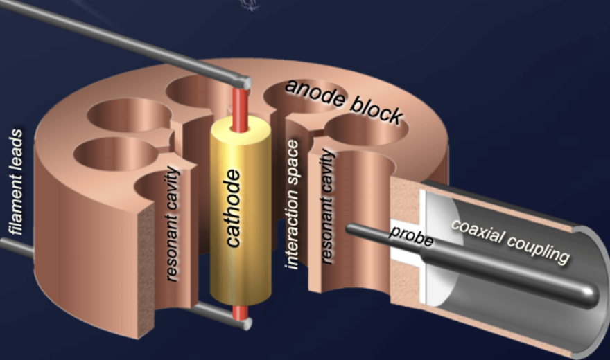
The cathode of a magnetron provides the electrons through which the mechanism of energy transfer is accomplished. The cathode is located in the center of the anode and is made up of a hollow cylinder of emissive material (mostly barium oxide) surrounding a heater. The feeding wires of the filament must center the whole cathode. Any eccentricity between anode and cathode can cause serious internal arcing or malfunction.
The open space between the anode block and the cathode is called the interaction space. In this space, the electric and magnetic fields interact to exert force upon the electrons. The magnetic field is usually provided by a strong permanent magnet mounted around the magnetron so that the magnetic field is parallel with the axis of the cathode.
The magnetron generally consists of an even number of microwave cavities arranged in a radial fashion. The form of the cavities varies:
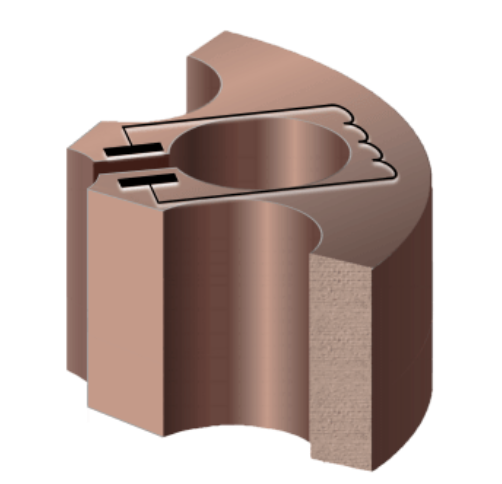
The slot type, hole-and-slot type, and rising sun type are usually machined by hobbing methods out of solid copper stock. But it can be difficult to cut soft metal such as copper in a lathe. The vane type is therefore generally made up of individual vanes assembled and brazed into a support ring. The resonance behavior can be tested and calibrated in the laboratory before the anode block is installed in the vacuum tube. The output lead is usually a probe or a loop extending into one of the resonant cavities and coupled into a waveguide or coaxial line.
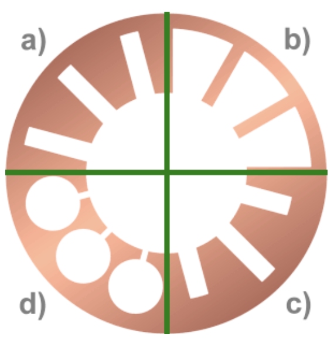
As with all velocity-modulated tubes, the generation of microwave frequencies in a magnetron can be subdivided into four phases:
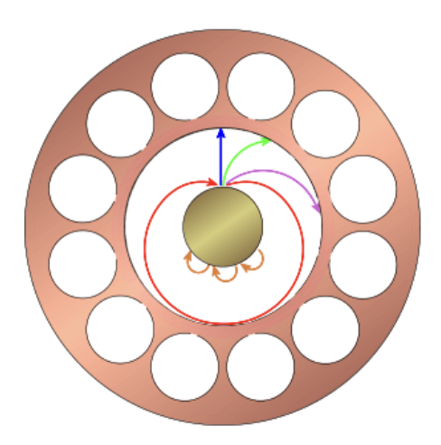
Since the cathode is kept at a negative voltage, the static electric field is in a radial direction from the grounded anode block to the cathode. When no magnetic field exists, heating the cathode results in a uniform and direct movement of the electron from the cathode to the anode block. A weak permanent magnetic field B perpendicular to the electric field bends the electron path. If the electron flow reaches the anode, a large amount of plate current flows. If the strength of the magnetic field is increased, the path of the electron will have a sharper bend. Likewise, if the velocity of the electron increases, the field around it increases and the path will bend more sharply. However, when the critical field value is reached, the electrons are deflected away from the plate and the plate current then drops quickly to a very small value. When the field strength is made still greater, the plate current drops to zero.
These values of the anode voltage and magnetic field strength that prevent an anode current are called the Hull cut-off magnetic field and cut-off voltage. When the magnetron is adjusted to the cut-off or critical value of the plate current and the electrons just fail to reach the plate in their circular motion, it can produce oscillations at microwave frequencies.
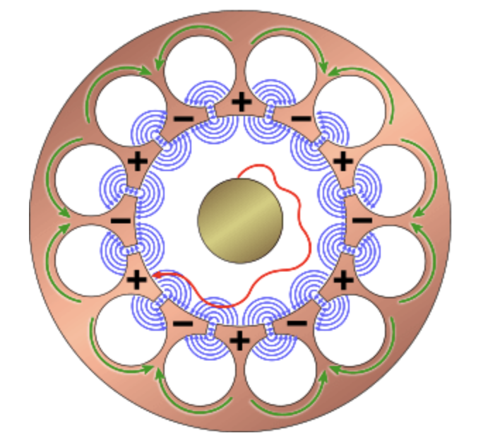
The electric field in the magnetron oscillator is a summary of AC and DC fields. The DC field extends radially from adjacent anode segments to the cathode. The AC fields, extending between adjacent segments, occur at an instant of the maximum magnitude of one alternation of the RF oscillations in the cavities. This AC field works in addition to the permanently available DC field. The AC field of each individual cavity increases or decreases the DC field.
The electrons that fly toward the anode segments loaded at the moment more positively are accelerated in addition. These reach a higher tangential speed. On the other hand, the electrons that fly toward the segments loaded at the moment more negatively are slowed down. These consequently reach a lower tangential speed.
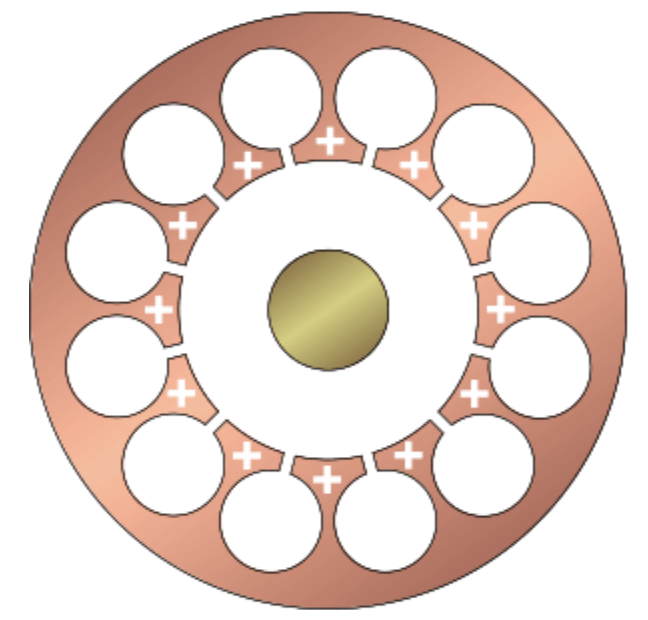
Due to the different speeds of the electron groups, velocity modulation leads to density modulation. The cumulative action of many electrons returning to the cathode while others are moving toward the anode forms a pattern resembling the moving spokes of a wheel, known as a space-charge wheel. The space-charge wheel rotates about the cathode at an angular velocity of two poles (anode segments) per cycle of the AC field. This phase relationship enables the concentration of electrons to continuously deliver energy to sustain the RF oscillations.
One of the spokes is near an anode segment that is loaded a little more negatively. The electrons are slowed down and pass their energy on to the AC field. This state is not static, because both the AC field and the wheel permanently circulate. The tangential speed of the electron spokes and the cycle speed of the wave must be brought into agreement.
Recall that an electron moving in an E field is accelerated by the field and takes energy from the field. Also, an electron dispenses energy to a field and slows down if it is moving in the same direction as the field (positive to negative). The electron passes energy to each cavity as it passes and eventually reaches the anode when its energy is expended. Thus the electron has helped sustain oscillations because it has taken energy from the DC field and given it to the AC field. Due to the multiple decelerations of the electron, its energy is optimally utilized and efficiencies of up to 80 percent are achieved.
After switching on the anode voltage, there is still no RF field. The single electron moves under the influence of the static electric field of the anode voltage and the effect of the magnetic field. Electrons are charge carriers, and during the flyby at a gap they give off a small part of their energy to the cavities (similar to a flute, which produces sound when a stream of air flows past the edge of a hole). The cavity resonator begins to oscillate at its natural resonant frequency. The interaction between this RF field (with an initial low power) and the electron beam begins immediately. The electrons are additionally influenced by the alternating field. This begins the process described in the sequence of phases 1 to 4 of the interaction between the RF field and the now velocity-modulated electrons.
Unfortunately, the transient oscillation does not begin with a predictable phase. Each transient oscillation occurs with a random phase. The transmitting pulses generated by a magnetron are therefore not coherent. However, it is possible to obtain phase coherence if the magnetron is fed with a continuous priming signal from a coherent oscillator.
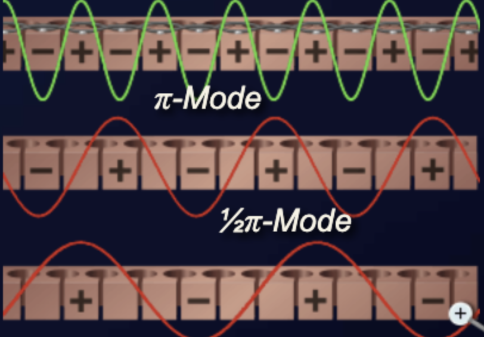
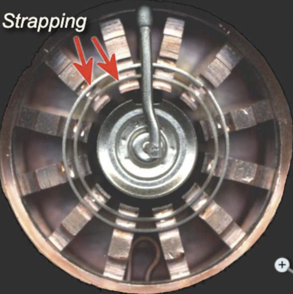
The operating frequency depends on the sizes of the cavities and the interaction space between anode and cathode. But the single cavities are coupled over the interaction space with each other. Therefore several resonant frequencies exist for the complete system. Several modes of oscillation are possible (three-quarter pi mode, one-half pi mode, one-quarter pi mode), but a magnetron operating in the pi mode has a higher output power and is most commonly used. When operating the magnetron in one of the other modes, the power or efficiency and the oscillation frequency decrease.
To ensure that a stable operational condition can be set in the optimal pi mode, two constructive measures are possible.
The frequency of the pi mode is separated from the frequency of the other modes by strapping to ensure that the alternate segments have identical polarities. For the pi mode, all parts of each strapping ring are at the same potential, but the two rings have alternately opposing potentials. For other modes, a phase difference exists between the successive segments connected to a given strapping ring, which causes current to flow in the straps.
Energy (RF) can be removed from a magnetron by means of a coupling loop into the bottom resonator. At frequencies lower than 10,000 megahertz, the coupling loop is made by bending the inner conductor of a coaxial line into a loop. The loop is then soldered to the end of the outer conductor so that it projects into the cavity. Locating the loop at the end of the cavity causes the magnetron to obtain sufficient pickup at higher frequencies.
The segment-fed loop method intercepts the magnetic lines passing between cavities. The strap-fed loop method intercepts the energy between the strap and the segment. On the output side, the coaxial line feeds another coaxial line directly or feeds a waveguide through a choke joint. The vacuum seal at the inner conductor helps to support the line. Aperture or slot coupling couples energy directly to a waveguide through an iris made from either glass or ceramic.
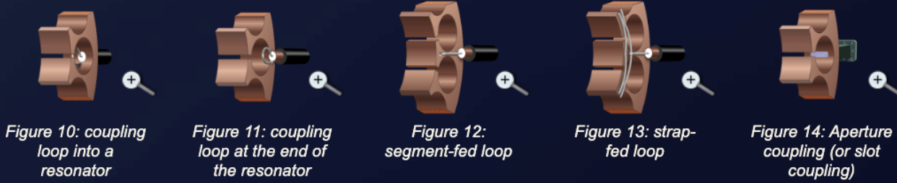
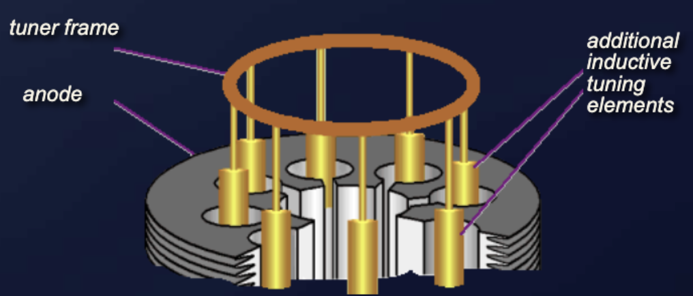
An example of a tunable magnetron is the M5114B used by the ATC radar ASR-910. To reduce mutual interference, the ASR-910 can work on different assigned frequencies. The frequency of the transmitter must therefore be tunable. This magnetron is provided with a mechanism to adjust the transmit frequency of the ASR-910 exactly.
The inductive tuning elements of the TH3123 magnetron are used in the ATC radar Thomson ER713S. Note that the adjacent filament supply lines resonant cavity and the coupling loop cavity are not tunable.
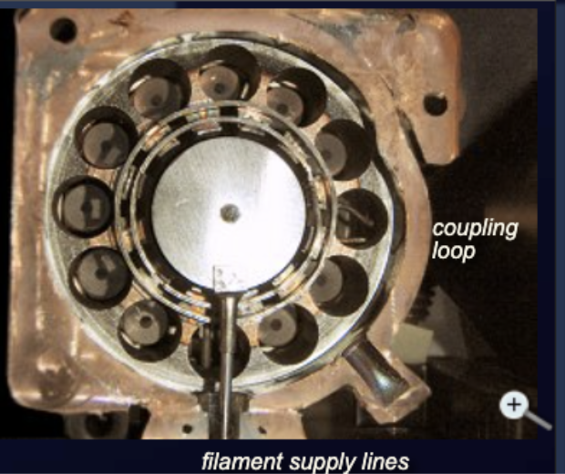
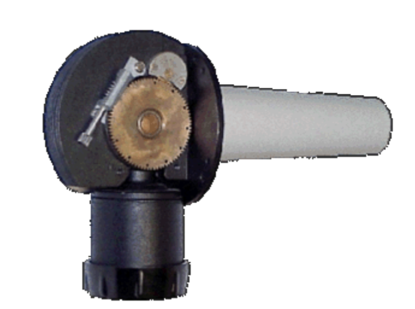
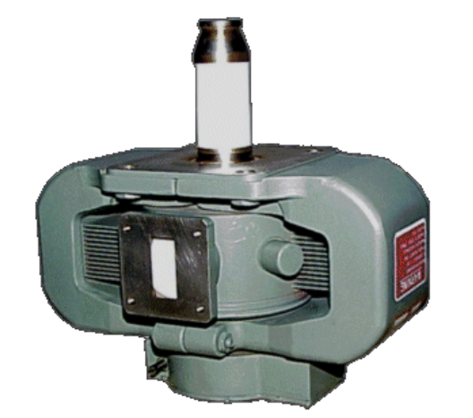
Documented sources state that the upper-frequency limit for the use of magnetrons to generate power is about 95 GHz. There are some other indications throughout the industry of higher frequencies, but with little supporting documentation.
A cavity resonator in a magnetron should have dimensions of about half the wavelength of the oscillation to be generated. At 96 GHz, the wavelength is in the range of 3.125 mm. The hole should therefore have a diameter of about 1.5 mm. The accuracy should be far below 5 percent because all cavity resonators should have the same resonant frequency so that oscillation is amplified. So a required mechanical accuracy of a few hundredths of a millimeter is already needed. This is perhaps feasible.
But if a resonant frequency of 300 or even 400 GHz is claimed, then the required dimensions of the cavity resonators are in the range of tenths of a millimeter. The required accuracy would then have to be in the range of a few thousandths of a millimeter. Even if one could imagine these mechanical challenges for a laboratory instrument, it fails because these small distances of tenths of a millimeter no longer permit a high anode voltage. Instead of a high-frequency oscillation, there is then a spark gap like that of a spark plug. These considerations make such data rather unlikely for such high frequencies.
Other names are sometimes used for the crossed-field amplifier in the literature:
The crossed-field amplifier (CFA) is a broadband microwave amplifier that can also be used as an oscillator (stabilotron). It is a velocity-modulated tube. The CFA is similar in operation to the magnetron and is capable of providing relatively large amounts of power with high efficiency. In contrast to the magnetron, the CFA has an odd number of resonant cavities coupled with each other. These resonant cavities work as a slow-wave structure: an oscillating resonant cavity excites the next cavity. The actual oscillation is led from the input waveguide to the output waveguide.
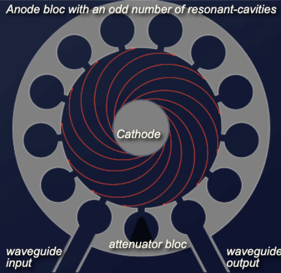
The electric and magnetic fields in a CFA are perpendicular to each other (crossed fields). Without an input signal, under the influence of both the electric field (anode voltage) and the magnetic field (a strong permanent magnet), all electrons will move uniformly from the cathode to the anode on a cycloidal path. This case should be avoided in practice, because the CFA will generate a high level of noise then.
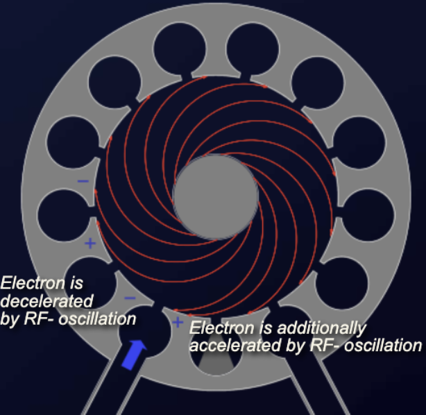
If the input waveguide introduces an oscillation into the first resonator, the vanes of the resonator acquire a voltage difference synchronously with the oscillation. Under the influence of this additional field, flying-past electrons are accelerated (at the positively charged vane) or decelerated (at the negatively charged vane). This causes a difference in the speed of the electrons. The faster electrons catch the slower electrons and form electron bunches in the interaction space between the cathode and the anode. These bunches of electrons rotate like the space-charge wheel known from the magnetron operation. But they cannot rotate in a full circle. The space-charge wheel is interrupted because the odd number of cavities causes an opposite phase in the last odd cavity (the bottom one between the waveguides). To avoid negative feedback, this resonant cavity may include a graphite block to decouple input and output.
The oscillation is still very weak in the first cavity. But the electron bunches hit the vanes of the following cavities and dispense their energy synchronously with the oscillation. The alternating microwave field causes the electrons to alternately speed up and slow down near the next cavity. Simultaneously, the anode near the vanes is hit by the first electrons in the cycle of oscillation. This causes amplification: the oscillation becomes stronger from cavity to cavity. At the resonant cavity with the coupled output waveguide these electron bunches are released: all but a few electrons hit the anode and cause the anode current.
The bandwidth of the CFA, at any given instant, is approximately plus or minus 5 percent of the rated center frequency. Any incoming signals within this bandwidth are amplified. Peak power levels of many megawatts and average power levels of tens of kilowatts are possible with crossed-field amplifiers, with efficiency ratings in excess of 70 percent.
To avoid ineffective modes of operation, the construction of the CFA contains strapping wires like those used in magnetrons. Because of the desirable characteristics of wide bandwidth, high efficiency, and the ability to handle large amounts of power, the CFA is used in many applications in microwave electronic systems. When used as the intermediate or final stage in high-power radar systems, all of the advantages of the CFA are used.
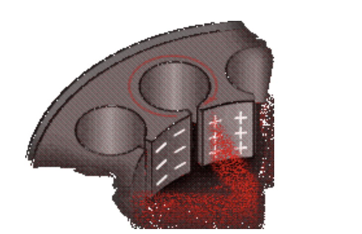
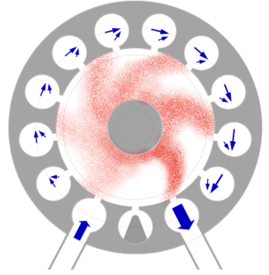
The amplifiers in this type of power-amplifier transmitter must be broadband microwave amplifiers that amplify the input signals without frequency distortion. Typically, the first and second stages are traveling-wave tubes (TWT) and the final stage is a crossed-field amplifier. Recent technological advances in solid-state microwave amplifiers have produced amplifiers with enough output power to be used as the first stage in some systems. Transmitters with more than three stages usually use crossed-field amplifiers in the third and any additional stages. Both traveling-wave tubes and crossed-field amplifiers have a very flat amplification response over a relatively wide frequency range.
Crossed-field amplifiers have another advantage when used as the final stages of a transmitter: the design of the crossed-field amplifier allows RF energy to pass through the tube virtually unaffected when the tube is not pulsed. When no pulse is present, the tube acts as a section of waveguide. Therefore, if less than maximum output power is desired, the final and preceding crossed-field amplifier stages can be shut off as needed. This feature also allows a transmitter to operate at reduced power, even when the final crossed-field amplifier is defective. If the anode voltage is switched on, the CFA provides a gain of 3 to 20 dB.
Extended interaction klystron (EIK) technology preserves the ruggedness and high-power capability of the conventional klystron. The EIK can be considered a refinement of both the two-cavity klystron and the coupled-cavity TWT. The EIK is a velocity-modulated tube and a linear beam device, which combines the advantages of both tubes: the ruggedness and high-power capability of a klystron and the larger bandwidth of a TWT. It achieves enhanced power, bandwidth, and efficiency at millimeter frequencies through the introduction of cavities with multiple coupled gaps. The number of cavities and interaction gaps can differ depending on required applications. A ladder-type RF circuit supports high efficiency and thermal stability at millimeter and sub-millimeter frequencies, while operating with moderate electron beam voltages. EIKs currently operate at frequencies from 18 to 280 GHz.
Electrons are emitted from the cathode, and a high-convergence electron gun accelerates and focuses the cylindrical electron beam through an aperture in the anode. The electrons get a strong acceleration from the anode voltage and pass this electrode through a little hole in the anode. Beyond the anode, the linear beam, confined by the field of a permanent magnet, passes through a beam tunnel in the center of a series of cavities. Each cavity represents a short piece of the resonant slow-wave structure based on ladder geometry. The number of slow-wave-structure periods is selected to satisfy the conditions of RF stability and efficient beam modulation. The spent electron beam then leaves the circuit and is recovered in the depressed collector.
The multi-gap RF circuit has a simple, rugged geometry and is characterized by high impedance. This supports efficient modulation and energy exchange between the RF field and the electron beam over a broad instantaneous bandwidth.
High gain per length produces a short interaction circuit and provides the opportunity to use permanent magnets for focusing. The result is a well-focused electron beam in a relatively light package. In the case of pulsed operation, a focus electrode aperture grid is used to switch the beam. A short ladder length minimizes parasitic modes, and various methods for selective mode suppression ensure stable operation with low noise.
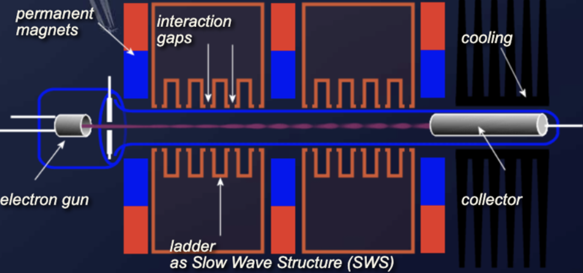
The extended interaction oscillator (EIO) is a single-cavity device with interaction gaps that function like a coupled-cavity TWT with extremely strong cavity-to-cavity coupling. At sufficiently high beam currents, oscillations are sustained. Variation of the beam voltage allows up to 0.4 percent frequency tuning.
Check your understanding. Five quick questions on magnetrons, auto-scored, with your answers saved on this device.